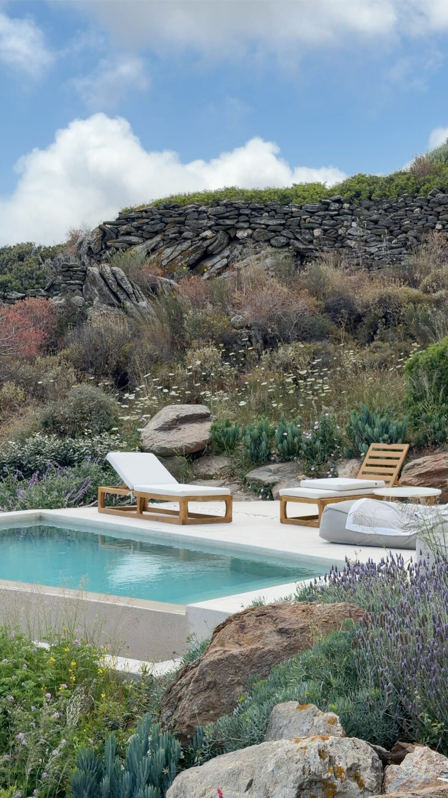
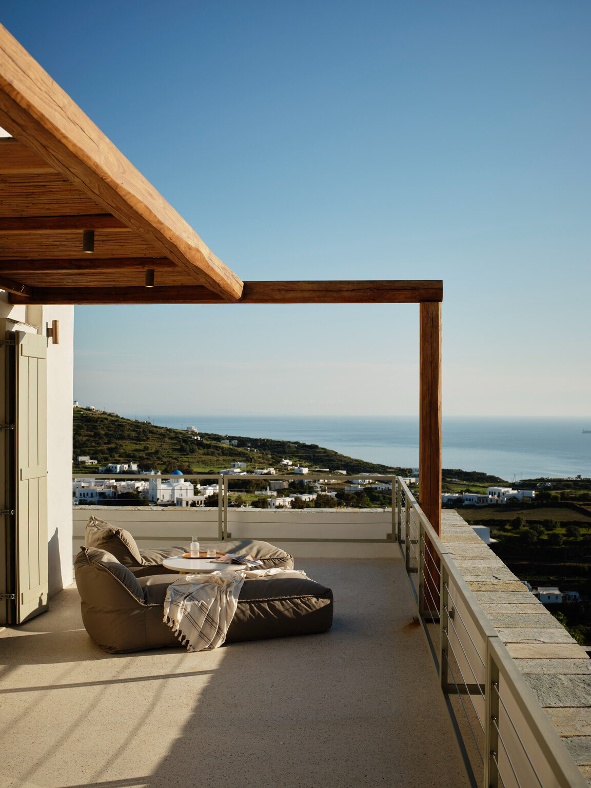
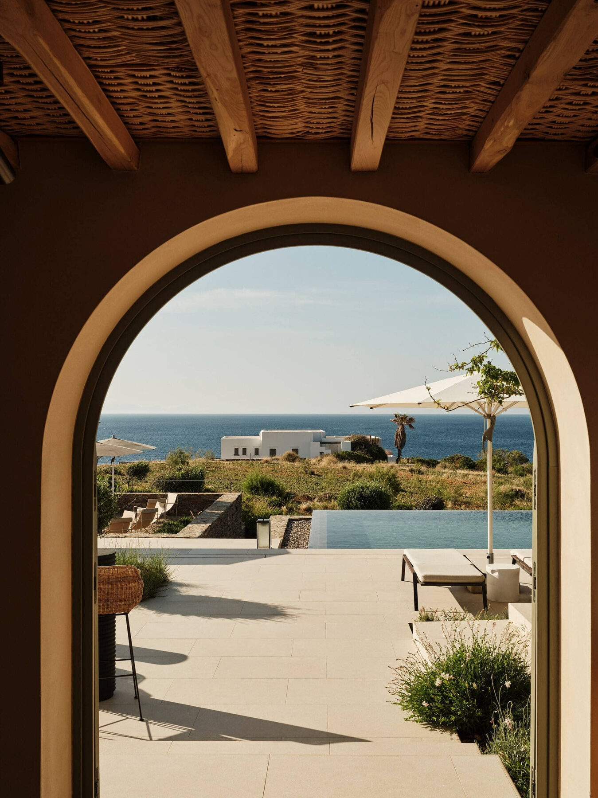
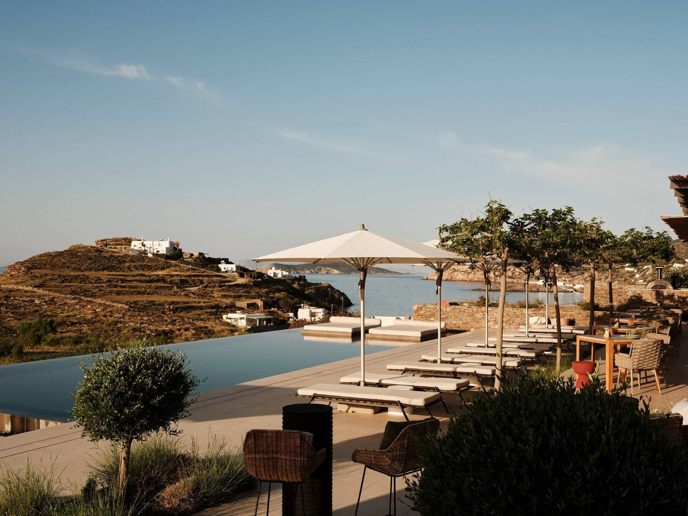
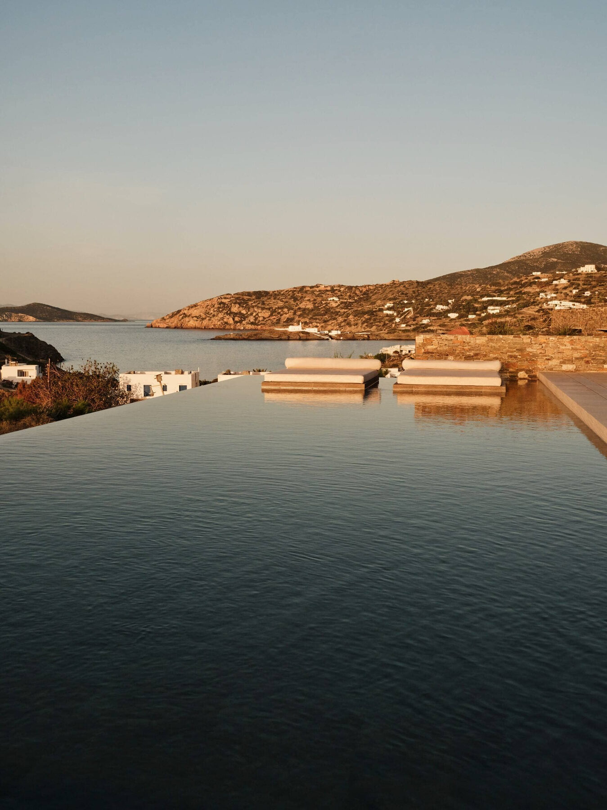

The Greece Collection · Issue No. 01
05Some islands ask you to see more. Sifnos asks you to linger.
One of the Cyclades' best seaside meals.
The best way to experience the island's rich culinary traditions.
Sifnos' postcard-perfect clifftop village.
Discover the island's centuries-old ceramic tradition.
Renting a car is the easiest way to experience Sifnos. Distances are short, making it easy to explore beaches, villages, and restaurants at your own pace while discovering corners of the island many visitors never reach. For island-hopping, I arrange private boat transfers and private helicopter transfers through my partnership with Hoper — often the easiest way to combine Sifnos with islands like Paros and Milos.
Sifnos isn't an island that demands an itinerary. It's where long lunches become your afternoon plan, centuries-old hiking trails lead you from one beautiful village to the next, and quiet evening walks become the highlight of your trip. For travelers looking to experience the Cyclades at a slower, more authentic pace, it's one of Greece's most rewarding islands.
Relaxed beach atmosphere and easy access to some of Sifnos' best swimming.
The island's lively heart with boutique shops, restaurants, and evening strolls.
Historic cliffside charm with unforgettable Aegean views.

Sifnos' hidden retreat
Tucked into the hills above Platis Gialos, Stamna captures everything that draws travelers to Sifnos: thoughtful design, warm hospitality, and a pace that encourages you to slow down.
Enjoy dinner at Plio. The beautifully designed on-site restaurant pairs impeccable service with one of the island's most peaceful dining settings.
Take your time over breakfast. Stamna is one of those hotels where slow mornings feel like part of the experience.
Walk into Apollonia one evening. The island's charming capital is easily reached on foot, making it easy to browse boutiques, stop for a drink, and linger over dinner before returning to the quiet of the hotel.
Stamna is luxury at its quietest. Rather than impressing with excess, it delivers thoughtful design, genuine hospitality, and the kind of calm that perfectly reflects the spirit of Sifnos.


Seaside simplicity
NOS is one of Sifnos' most thoughtfully designed boutique hotels. Set above the fishing village of Faros, it pairs minimalist Cycladic architecture, sweeping Aegean views, and an atmosphere that feels effortlessly calm.
Wake up for sunrise. The east-facing views make early mornings one of the most memorable parts of staying here.
Walk into Faros for dinner. The fishing village feels refreshingly untouched, with some of Sifnos' best waterfront tavernas.
Spend an afternoon doing nothing. NOS is one of the few hotels where lingering by your suite feels just as rewarding as exploring the island.
NOS isn't trying to impress with excess. Everything feels intentional, from the architecture to the pace of the experience. If you're looking for a hotel that feels deeply connected to Sifnos rather than separate from it, this is one of my favorite stays in the Cyclades.

How I'd spend three unforgettable days on one of Greece's most authentic islands.

Ease into Sifnos with a relaxed afternoon at your hotel before heading to Platis Gialos for a leisurely seaside lunch. As the sun begins to set, wander the streets of Apollonia, stop for a glass of wine at Loggia Wine Bar, then enjoy dinner at Cantina, one of my favorite restaurants in the Cyclades.
Start the morning with the scenic coastal walk from Faros Beach to Chrissopigi Monastery before continuing to the island's pottery workshops and the postcard-perfect village of Kastro. Spend the afternoon hiking to Fykiada Beach, one of Sifnos' most beautiful and secluded stretches of sand, before returning for a relaxed evening.
Enjoy one last slow breakfast before driving through Sifnos' interior villages. Settle in for a long seaside lunch at Lembesis overlooking Chrissopigi, spend the afternoon swimming in the island's crystal-clear water, and leave with the feeling that you've experienced Greece at its own pace.
The best days on Sifnos aren't built around checking off sights. Leave room for long lunches, spontaneous swims, and afternoons that unfold without a plan.